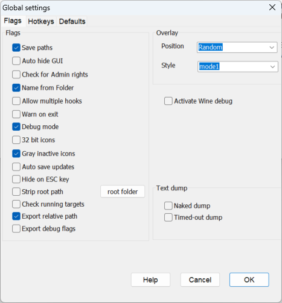
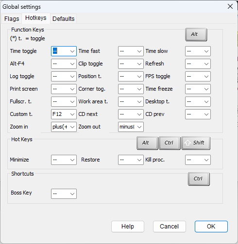
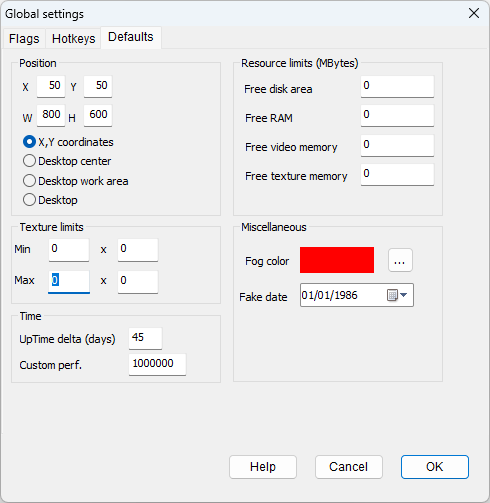

|
Save paths |
Writes the last path used for the game folder and the import/export directory, to "dxwnd.ini". These paths will then serve as the default values for these folders. Saving the last used path can be useful, but there are some potential incompatibilities and problems (reported mainly on Windows XP) when a saved folder no longer exists. In this case, you may have to manually delete the saved path from "dxwnd.ini", and you may prefer to disable this option. |
|
Auto hide GUI |
Minimizes DxWnd while the hooked program runs, restoring the window when the program ends. This only works for programs started through the DxWnd interface. |
|
Check for Admin rights |
Tells DxWnd to autodetect its own administrator permissions at startup and propose a self-elevation if missing. This option can also be modified with a configuration file (see Configuration file). |
|
Name from Folder |
When selected, DxWnd creates the default name from the folder instead of the executable. |
|
Allow multiple hooks |
Allows hooking more than one application at a time. |
|
Warn on exit |
Yes/No prompt when closing DxWnd. |
|
Debug mode |
Enables debug mode. This option can also be modified with a configuration file (see Configuration file). |
|
32 bit icons |
To use 32-bit icons instead of the default 16 colors. |
|
Gray inactive icons |
When a path to an executable can not be found, the icon will be grayed out. |
|
Auto save updates |
Forces DxWnd to save any configuration update immediately to the disk (on "dxwnd.ini") instead of saving at the end of the configuration, so reducing the risk of configuration losses in case of a crash. |
|
Hide on ESC key |
When enabled, hitting the ESC key when DxWnd is in background and with focus will hide the DxWnd window to the icon tray. |
|
Strip root path |
Enables the conversion of a common path prefix (hereby referred as "root") to a conventional path marker ":" in "dxwnd.ini". This way, it would be possible to remap the whole configuration and export files to a new root value, making it easier to handle the migration of the configuration to different machines. The "root folder" button allows the definition of a custom root folder (by default, "C:\Root"). |
|
Check running targets |
When this flag is set, at startup DxWnd will go through the list of all configured entries and will check if any of them is currently running. For each running program, its configuration will be temporarily disabled for the current DxWnd session and automatically restored at next DxWnd activation if the program is no longer running. In this way it is possible to avoid possible interferences when DxWnd is started while some target program is currently running. |
|
Export relative path |
When this flag is cleared, the export operation copies the full pathname of the target program to the exported file . This path will likely be invalid when importing the configuration in another system. When this flag is set, the program pathname in the export file will be shortened in such a way that, when imported in another system, DxWnd will prompt a request to choose the correct program folder. |
|
Export debug flags |
By default, the export operation clears all debug and log flags to avoid the replication of harmful configurations. When this flag is set, the debug and log flags are preserved in the exported configuration. |
|
Activate Wine debug |
The flags tell the WineVDM program to enable debug logging. The log is written to the $stdout and $stderr output files and it can be registered by setting the flag "stdout+stderr" in the "Logs" tab. Beware: the Wine debug is very verbose and can impact on the system performances and used HD space, so it is to be used only when necessary for debugging operations. |
|
Position |
The combo box defines the position for the DxWnd overlay messages (FPS and time stretching): it can be set in each one of the four window corners, or randomly moved to all corners, or centered in the window. |
|
Style |
Defines the style for the overlay text. |
These flags determine the way that text capture is managed and formatted for output. They are general flags valid for every task entry that enables the text dump feature through the "patch:DumpText" tweak
|
Naked dump |
By default, the text dump prints additional information to the bare text, like the x,y text position coordinates and the function call responsible for the output. This flag strips all additional information so that only the "naked" text is out. This mode is useful for instance to cut & paste the bare text to a translation tool. |
|
Timed-out dump |
Some programs (namely, many visual novel games) prints the text one chunk at a time in quick sequence. In this case, the text dump would return a long list of single characters or words. This flag chains together all strings received within a short timeout to try to rebuild a whole sentence. |
This area allows you to assign common tasks, like turning on logging or taking a screenshot, to the function keys (the row with F1 through F12 at the top of your keyboard). You can map the following functions:
|
Time toggle |
Toggles between normal and accelerated program speed. This allows you to accelerate/decelerate only a part of the gameplay (e.g., during a fight) while running at a normal speed otherwise. |
|
Time fast |
Speeds up the hooked program. See Time Slider. |
|
Time slow |
Slows down the hooked program. See Time Slider. |
|
Alt-F4 |
This key is the well known quit command for any task. If the application doesn't react quickly enough to your command, you can set the “Intercept Alt-F4 key” option to cause DxWnd to immediately quit the program. |
|
Clip toggle |
Toggles the clipping region ON and OFF so that you can exit the game area and control other tasks or move/resize your game window. |
|
Refresh |
Forces a surface repaint. Some old games didn't even consider the possibility of a task overriding the game area, so they don't repaint when they should. This is a technical detail, but if your game screen gets dirty, try this key to fix it. |
|
Log toggle |
Toggles logging ON/OFF. Since painting operations can be quite verbose, toggling the log can be a useful trick to get information about a specific activity without having to browse tons of log lines. |
|
Position t. |
Toggles the window position locking (if enabled). This allows you to temporarily unlock the window, move or resize it, and then lock it again. |
|
FPS toggle |
Toggles the FPS display ON and OFF. |
|
Print screen |
Captures an image of the current screen in the hooked program and saves it to your computer's clipboard. |
|
Corner tog. |
Toggles "cornerized" mode. Cornerized mode is a fake windowing mode that leaves the screen at the current (usually higher) resolution while the game is not aware of that. The game then runs at the 0,0 coordinate that corresponds to the top-left corner of the screen. It is useful when the GDI emulation is not perfect, so it's better to have a cornerized mode than a badly emulated rendering. This feature is intended to handle Blizzard's GDI networking screens. |
|
Time freeze |
This switches between the normal time mode and a "locked" mode, where the time is not advancing at all. This sometimes produces weird effects, like having all the characters in a game stand still while still being able to move the camera. |
|
Fullscr. t. |
Toggles between fullscreen mode and windowed mode. |
|
Work area t. |
Similar to "Desktop toggle", but the window is stretched to fill only the desktop work area rather than the entire desktop area, leaving the taskbar visible. |
|
Desktop t. |
Similar to Fullscreen toggle, toggles between fullscreen emulated mode and windowed mode. The difference is that in Desktop mode, the video color settings are still emulated, while the color depth remains unchanged. |
|
Custom t. |
Sets a custom toggle key. This key has no predefined meaning, it is reserved for debugging purposes on experimental DxWnd releases and should not be used. |
|
CD next |
When multiple CD paths are present, the key rotates the currently active CD volume forward by unity, cycling the avaliable disks. For exmple, if there are 3 CD disks configured in the following folders: "cd", "cd02" and "cd03", if the currently active disk is CD2 then the key activates CD3 and, on the next presses, CD1, CD2, CD3, ... again. BEWARE: The CD switch cannot be immediate, it will be scheduled for the next time the application will access a virtual CD disk drive. BEWARE: Using the "CD Prev."/"CD Next" function keys is equivalent to setting the active CD by means of the CD Charger panel, but when the game is configured for proxy mode and run with no DxWnd GUI, these keys are the only way to change the mounted CD volume! |
|
CD prev |
Same as the CD next key, but rotates the currently active CD volume backwards by unity, cycling the avaliable disks. For exmple, if there are 3 CD disks configured in the following folders: "cd", "cd02" and "cd03", if the currently active disk is CD2 then the key activates CD1 and, on the next presses, CD3, CD2, CD1, ... again. |
|
Zoom in |
Increases the scaling factor of the ENABLEZOOMING effect of a 10% value. This function key can be used as alternative to the mouse wheel. |
|
Zoom out |
Decreases the scaling factor of the ENABLEZOOMING effect of a 10% value, up to the minimum value of 1.0. This function key can be used as alternative to the mouse wheel. |
This area allows you to assign hot keys to minimize the window, restore it, or kill the process. These functions are accessed by holding down Alt, Ctrl, Shift, and then pressing the chosen function key (F1 through F12).
This area allows you to assign shortcut keys. Currently there is one single key definition. It is the "Boss key" shortcut key to hide the target program screen. It is intended to replicate the behavior of the "Boss key" of old DOS games that had a special key to show a fake working screen to play games unnoticed.
This section allows you to change the default settings for DxWnd window size and position, as well as the uptime delta (see "Timing > Increase UpTime" flag) and the custom clock frequency (see "time:CustomPerfCount" tweak). These values are applied by default when a new program entry is created.
This area allows you to set minimum and maximum widths and heights for texture processing. The format is as follows:
Min <minimum width> x <minimum height>
Max <maximum width> x <maximum height>
See Configuration file > Texture.
This area allows you to set the default values for some time related flags:
|
UpTime delta |
The elapsed UpTime (time from last Windows boot) expressed in days. The default value of 45 days is usually valid to generate some overflow problems. |
|
Custom perf. |
This field allows you to specify a custom performance frequency value. By default, this value should be 1MHz (1.000.000). The value affects the behavior of the "Timing > Normalize performancy counter" flag. |
Here is the definition of the custom values for the limitation flags. All the values are expressed in MBytes, where 1MByte = 1024 * 1024 bytes.
|
Free disk area |
Maximum value for the free disk area. |
|
Free RAM |
Maximum value for the free RAM. |
|
Free video memory |
Maximum value for the free video memory. |
|
Free texture memory |
Maximum value for the free texture memory. |
|
Fog color |
The forced color of the fog to replace the value defined by the application, when the "3D > Set fog color" flag is set. To ease the operation, the color can be set by clicking on the "..." button on the right that opens a color selection dialog. The chosen color is then drawn in the colored rectangle. |
|
Fake date |
Allows the definition of the fake system date that is used when the "Timing > Fake date" flag is set. |